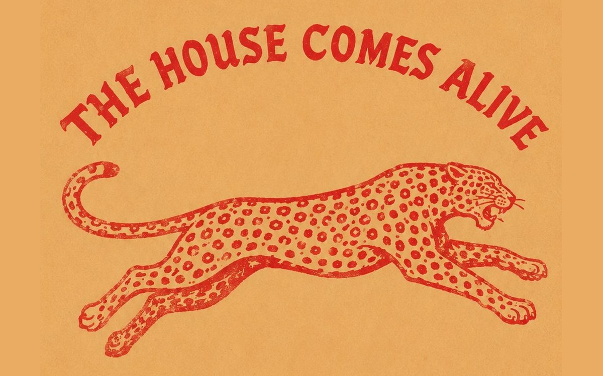

Una casa che suona: la musica di Casa Salvaje, una playlist per ogni mondo
Dalla cumbia alla champeta, dal caffè del mattino al club nelle ore piccole: cinque mondi, cinque colonne sonore su Spotify.

A Casa Salvaje la musica cambia con l'ora e con la porta che varcate. Il caffè del mattino non suona come il fuoco di Kanibal, e la cena da SLVJ non suona come la notte, quando la sala diventa un club. Per questo ogni mondo ha la sua playlist, e un'altra ancora riunisce tutta la casa: ascoltatela su Spotify.
Una città che suona
Poche regioni al mondo hanno prodotto tanta musica quanto la costa caraibica della Colombia. La cumbia è nata qui dall'incontro di tre mondi, indigeno, africano ed europeo, e dal Cinquecento accompagna le feste patronali dei villaggi. Il Carnevale di Barranquilla, a circa due ore di strada, riconosciuto dall'UNESCO nel 2003 come Capolavoro del Patrimonio Orale e Immateriale dell'Umanità, resta il suo grande palcoscenico.
Cartagena ci ha messo del suo. Qui nacque nel 1955 Joe Arroyo, che nel 1986 incise «La rebelión», una salsa che racconta la storia di una coppia di africani ridotti in schiavitù nella Cartagena del Seicento. A una cinquantina di chilometri si trova San Basilio de Palenque, fondato da schiavi fuggiaschi guidati da Benkos Biohó, i cui tamburi, insieme ai dischi africani che arrivavano al porto, hanno dato forma alla champeta. E nel 1982, quando Gabriel García Márquez ricevette il Nobel a Stoccolma, portò con sé Totó la Momposina e altri musicisti dei Caraibi perché anche lì risuonasse la cumbia.
Una playlist è un picó tascabile.
I · Mattina
La Domenica
Una domenica che non finisce mai: caffè, un lungo pranzo e l'aperitivo mentre il pomeriggio sfuma. Due playlist: una e un'altra.
II · Il fuoco
Kanibal
Il battito del fuoco e dell'istinto, in due playlist.
III · La notte
SLVJ
Due volti, come la notte: Cena, per comportarsi bene a tavola, e Festa, per quando non serve più.
Da giovedì a sabato, quando SLVJ diventa un club, la musica suona su un impianto Funktion-One. Scoprite perché in il suono di SLVJ.
IV · Il rito
ONO
Dove il rito incontra il desiderio: la playlist di ONO.
Epilogo
Portate la casa con voi
Vivono tutte sul nostro profilo Spotify. Seguitelo e portate la casa a casa vostra, in macchina o al pre-serata. È un'abitudine molto costeña: sui Caraibi colombiani la musica si condivide, si presta e si mette a tutto volume perché la sentano anche i vicini.
La casa suona anche sul web. Ogni pagina di casa-salvaje.com ha la sua musica: toccate un punto qualsiasi e parte, sempre con una canzone a caso. Il pulsante «Musica» permette di mettere in pausa, saltare il brano e, su SLVJ, scegliere tra Cena e Festa.
Siamo in Calle Santa Teresa #32-41; controllate gli orari di apertura e leggete com'è una notte da SLVJ.